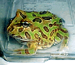
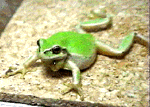

|
私も入っています。。 全国かえる奉賛会  全国かえる奉賛会に入会するには、自分のホームページに、上のバナーを貼り付けるだけ。どんどん入会しましょー。大王様に会うには、上の絵をクリック。ずっと奥に写真館があるぞ。 |
|
【かえる古新聞】
|
| 【カエル随筆】梅雨明けが待ち遠しい夕暮れ時。私たちは、雨にぬれた武蔵野の小道を歩いておりました◆すると数メートル先の路上にあやしい色の物体が。視力1.5を誇る私は「むむむ、巨大な犬のうんち」と認識し回避行動をとり始めましたが、お気楽T子はその物体に向かう直進コースをとり続け、まさに交差しようという時「あ、！」◆T子が「かえるを踏むまい」とよけた足の上に、かえるの方も「踏まれまい」と移動したので、次の瞬間、T子のハイヒールの足の甲にはでっかいかえるがのっかっていました◆T子いわく「ずっしりと重くてひんやりしていた」と◆梅雨時になると、かえるにのられて凍りついているT子の姿を思い出してしまうのでした。 Naoko Baba さまから投稿 |
|
【カエル速報】 1.カエルグッズ 2.カエルリンク 3.国家健全化計画 4.謎の髭男 5.とっくりくん 6.街頭で見た蛙 7.カエルショップ 8.カエル・コスプレ 9.カエルな表紙 |
| 大王様へのメール |
奉賛会推薦菓子
かえる饅頭 この欄に紹介するカエル物品や書籍について情報を待ってます。 |
|
|
可愛さに脱帽！これがベルツノカエル
|
 |
|
|
 |
|
|
さあ、子供のように名前をつけて一生を共に暮らそう。神奈川県のMina Teraiさんから届いたメールに、くっついてきたベルツノカエルのＲｉｂｂｉｔ君。まず彼を見て欲しいぞ。思慮が深そうで哲学的な風貌。緑地に茶色の模様が入った美しい肌。これは、ほ乳類、爬虫類中心の現代のペットブームが完全に去り、これからは、カエルこそ至上のペットとなることを予感させるお姿である。
性別不明の美男子だ！
【神奈川発=Mina同志記者】デジカメで撮ったうちのＲｉｂｂｉｔ君を送ります。いかがでしょう？なかなかの美男子（男の子だと思ってます）ではないですか？なにせ初のデジカメ撮影なのでいまいちなんですが．．．すっげーかわいいので、大王様もほしくなったぞ。こちらは「雨蛙３号」
【大阪発=HIROAKI同志記者】 うちにいるカエルの写真を送ります。名前は「雨蛙３号」といいます。詳しくはこのページにへどうぞ。カエルの世話は大変です。特に小さいカエルは餌の確保が難しく、餌を求めてあちこち探し歩いています。HIROAKI同志記者直筆署名
@) @) HIROAKI YAMAMOTO <*><*> ( _ ) OSAKA / ABENO < __; >
カエル連れて街を行こう
【福岡発=げこげこ大王７世発】これからは、カエルペットブーム到来に備えて、われわれ全国カエル奉賛会会員は、それぞれの自治体に『全市街湿度８０パーセント』『水浴びスポットの建設』『カエルホテルの建設』『冬眠場所や交尾場所の確保』などの建設を陳情しなければならない。品種改良で多様なカエルを
【全国かえる奉賛会】全国かえる奉賛会は、世界の動物品種改良業者に対して、かえるについても２１世紀初頭までに- ぬいぐるみのような長い毛がはえた愛玩カエル
- シェパードやドーベルマン並の大型カエル
- 水分がなくても生きて行ける品種の改良
- 人間と家族的なきずなで結ばれるよう、呼べばしっぽを振ることができる、しっぽがあるままで成長する品種のカエル
ベルツノカエルの魅力はここでも紹介
【全国かえる奉賛会】ベルツノカエルが好きになったら、このページにも行ってみよう。その魅力がよくわかるよ。うちの子・ベルツノガエル
ついでにお友達も紹介しよう(笑)